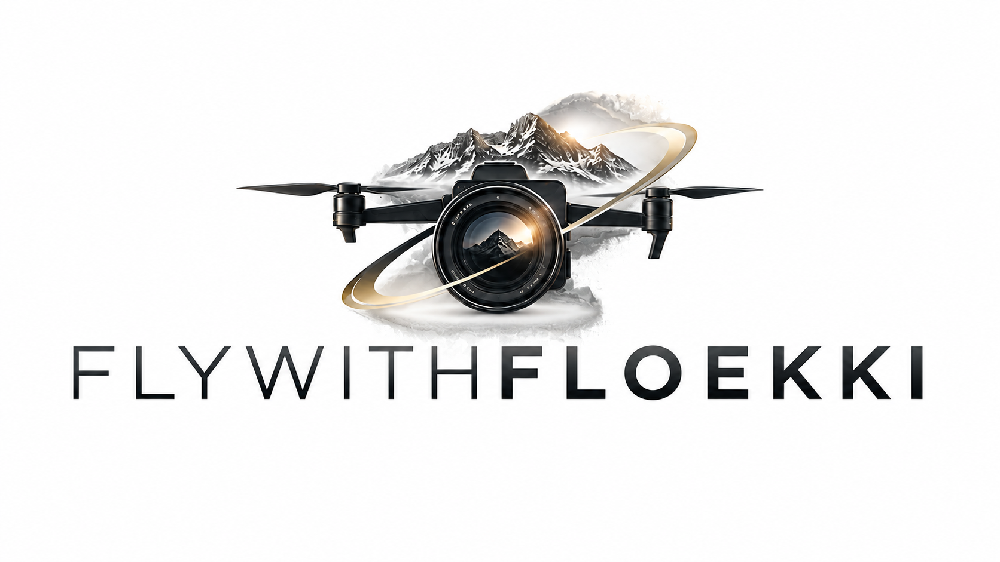

Auftraggeber
Gemeinde Schönwies gemeinsam mit KLAR! Landeck und Umgebung.

Referenzprojekt · Bau & Infrastruktur · Schönwies
Eine langfristige Videobegleitung für die Gemeinde Schönwies und KLAR! Landeck und Umgebung – vom Baufortschritt bis zum Weg des Trinkwassers von der Quelle zur Bevölkerung.
Gemeinde Schönwies gemeinsam mit KLAR! Landeck und Umgebung.
Den Baufortschritt begleiten und gleichzeitig den gesamten Weg des Trinkwassers verständlich und visuell nachvollziehbar darstellen.
Mehrere Drehorte und Drehzeitpunkte mit Osmo Pocket, DJI Mini 3, DJI Avata 2, Actioncams, Unterwasseraufnahmen und Interviews.
Für die Gemeinde Schönwies und KLAR! Landeck und Umgebung wurde die Entstehung des Trinkwasserkraftwerks über einen längeren Zeitraum videografisch begleitet. Neben dem Baufortschritt sollte vor allem der gesamte Weg des Wassers verständlich erzählt werden.
Das Video zeigt, wo das Wasser entspringt, wie es gefasst und in Behältern gesammelt wird, wie es entlang des unterirdischen Leitungsnetzes weiter zum Trinkwasserkraftwerk gelangt und schließlich der Bevölkerung zur Verfügung steht.
So verbindet die Produktion technische Abläufe, regionale Infrastruktur und den konkreten Nutzen des Projekts zu einer zusammenhängenden Geschichte.
Das Video wird aus Datenschutzgründen erst nach deinem Klick von YouTube geladen.
Die Produktion beginnt bei einem Dorfbrunnen in Schönwies, aufgenommen mit der DJI Osmo Pocket. Danach führt die Geschichte zu den Quell- und Fassungsbereichen. Dort kamen die DJI Mini 3 und die DJI Avata 2 für ruhige Luftbilder und dynamische FPV-Perspektiven zum Einsatz.
Zusätzlich entstanden Innenaufnahmen der Wasserbehälter sowie Aufnahmen mit Actioncams – darunter auch Unterwasseraufnahmen. Da große Teile der Leitungen unterirdisch verlaufen, wurde der tatsächliche Leitungsverlauf vorab anhand von Karten nachvollzogen und anschließend aus der Luft visuell nachgezeichnet.
Auch der Baufortschritt des Trinkwasserkraftwerks wurde an mehreren Zeitpunkten dokumentiert. Zum Abschluss entstanden weitere Innen- und Außenaufnahmen sowie Interviews mit Osmo Pocket und externem Mikrofon.
Für mich war dieses Projekt etwas Besonderes, weil es mein erstes wirklich großes Videoprojekt über einen längeren Zeitraum war. Anders als bei einem einzelnen Drehtag musste ich den Baufortschritt verfolgen, mehrere Drehorte miteinander verbinden und die Entwicklung des Projekts über längere Zeit nachvollziehbar dokumentieren.
Eine zusätzliche Herausforderung waren die verschiedenen Interviews mit Beteiligten aus Planung und Umsetzung. Gleichzeitig musste ich mich intensiv mit den technischen Abläufen beschäftigen: mit dem Weg des Wassers, den Behältern, dem unterirdischen Leitungsnetz und dem Trinkwasserkraftwerk selbst.
Gerade dadurch entstand eine Produktion, die nicht nur schöne Bilder zeigt, sondern einen technisch komplexen Ablauf verständlich und logisch erzählt.
Das fertige Projekt wurde öffentlich auf YouTube veröffentlicht und ist dort weiterhin abrufbar.
Das Video wurde der Gemeinde übergeben und wird dort weiterhin zur Information und Präsentation des Projekts genutzt.
KLAR! Landeck und Umgebung setzt die Produktion ebenfalls ein. Das Video wurde bereits bei verschiedenen Ausstellungen und Präsentationen gezeigt.
Ich bin besonders stolz darauf, dass das Video nach seiner Fertigstellung nicht nur einmal veröffentlicht wurde, sondern bis heute für unterschiedliche Zwecke weiterverwendet wird – von der Gemeinde über KLAR! bis hin zu Ausstellungen und Informationsangeboten rund um die Trinkwasserversorgung.
Gerade weil es eines meiner ersten großen Projekte war, zeigt es für mich sehr gut, was eine durchdachte Videoproduktion leisten kann: ein komplexes Thema verständlich machen, echte Entwicklung dokumentieren und gleichzeitig Bilder schaffen, die im Gedächtnis bleiben.
Ob Baufortschritt, öffentliches Projekt, Gemeinde, Unternehmen oder Infrastruktur: Gerne entwickeln wir gemeinsam eine passende filmische Umsetzung.
Unverbindlich anfragen